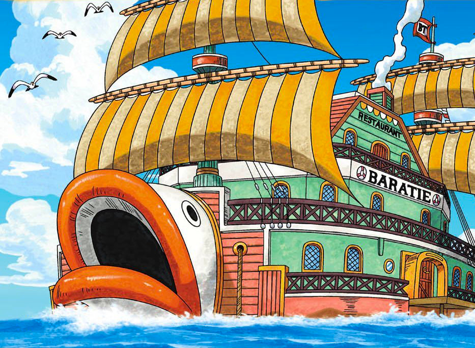

Anchored in the Sambas Region of the East Blue, we offer a culinary adventure like no other. Whether you're a Marine, a pirate, or just a
hungry traveler, our doors are open to all who seek the finest cuisine on the high seas!

Navigating to Baratie
Lost at sea? Fear not! The Baratie is your beacon of culinary hope. Our location may change with the tides, but our flavor remains
constant. Current coordinates: 16°50'N 132°15'E.
In stormy weather, look for our extended 'battle fins' – perfect for stabilizing your dining experience (and fending off the occasional
sea monster).